Fiber Optics#
Introduction to fiber optics#
This chapter introduces the field of fiber optics. In comparison to free space optics considered so far, fibers confine light to a small volume, which prevents power loss by diffraction. As such, optical signals can propagate over large distances enabling, among others, fast and reliable communication all over the world.
In this chapter we will restrict ourselves to the cylindrical step-index fiber to confine light and to introduce fiber optics concepts. Such a fiber consists of a core (refractive index \(n_1\)) and a cladding (refractive index \(n_2\), \(n_2<n_1\)) as shown in Fig. 130. Since optical fibers have a typical core diameter \(d\) of a few micrometers and a cladding diameter of only \(125\mu m\), they are typically protected by a (reinforced) jacket around the cladding, as observed in the same figure.
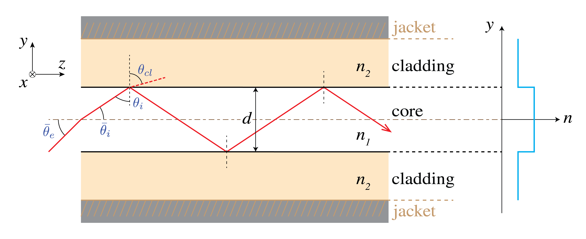
Fig. 130 Light ray transmission through a cylindrical step-index fiber. These fibers have a core, cladding and often a jacket. For \(n_1>n_2\) total internal reflection may occur, such that the light remains confined to the fiber.#
This chapter can be subdivided in three parts in which we move gradually from theory to application. Based on the step index fiber, this chapter first discusses light confinement by total internal reflection. Then, in Fiber modes, the concept of modes of light propagating through an optical fiber is introduced. This gives rise to certain figures of merit and leads to the important distinction between ‘‘single mode’’ and ‘‘multimode’’ fibers, discussed in Fiber parameters. Although fiber optics has advantages over free space optics in terms of light propagation, propagation is not ideal. The effects and causes of dispersion and loss are therefore introduced and discussed in Fiber dispersion and Fiber loss mechanisms respectively.
After this theoretical view on optical fibers, we zoom out a little to introduce various other fiber types in Fiber types, since the step-index fiber is not the only implementation of optical fibers (although it is the most common). In Fiber connections, we discuss how optical fibers can be connected to the outside world. What this outside world may consist of is shortly discussed in Fiber components. This section introduces common fiber optic components used to manipulate light propagating through fibers enabling us to build useful setups and applications. Some of these applications are elaborated on in Applications of fiber optics and future directions. This section also provides an outlook in the possible directions the rich field of fiber optics is headed.
Total internal reflection#
Let us first concern ourselves with the question how light can be confined in fibers. This happens by total internal reflection (TIR), which can be well explained using ray optics. Typically, fibers have a silicon-oxide (\(\text{SiO}_2\)) cladding, whereas in the \(\text{SiO}_2\) core small amounts of germanium-oxide (\(\text{GeO}_2\)) are ‘‘dissolved’’. This doping increases the index of refraction \(n_1\) slightly, thus \(n_1>n_2\), as in Fig. 130. The step in refractive index \(n_1-n_2\) is indeed small, in the order of \(10^{-3}\).
Now consider Snell’s law for the core-cladding boundary in Fig. 130,
For angles \(\theta_{\text{i}}\) in excess of the angle \(\theta_{\text{i,c}}=\arcsin(n_2/n_1)\) refraction no longer occurs (the maximum value of a sine is 1) and light is totally reflected back into the core. Therefore we will refer to \(\theta_{\text{i,c}}\) as the internal critical angle. This automatically implies that the fiber does not accept light from all directions, which leads to the definition of the (external) critical angle \(\bar{\theta}_{\text{e,c}}\). This angle will be further discussed in Fiber parameters. For \(\text{SiO}_2\), in which \(n_2\approx 1.444\) at telecom wavelengths (\(\lambda=1550 \text{nm}\)), TIR occurs if \(\theta_1>85.7^{\circ}\) if the core \(n_1=1.448\). Because this \(\theta_{\text{i}}\) is close to \(90^{\circ}\), fibers with \(n_1\approx n_2\) are also referred to as ‘’weakly guiding’’.
Since the angle of reflection equals the angle of incidence upon reflection, TIR occurs at every core-cladding interface and the light remains confined to the core (strictly speaking, this argument only holds for straight fibers. The influence of bends in fibers is discussed in Fiber loss mechanisms). Because optical losses in \(\text{SiO}_2\) are small (in the order of \(0.1\text{dB/km}\),[1] see Fiber loss mechanisms), this implies fibers can easily carry optical signals over distances in the order of several kilometers without considerable loss.
Fiber modes#
Although some of the properties of optical fibers can be understood from ray optics, the exact propagation of light through fibers is described by Maxwell’s equations. These give rise to certain modes that propagate through fibers, electromagnetic (EM) fields that have a constant distribution and polarization along the fiber axis. All possible EM-fields in fibers can be described as a superposition of fiber modes, like a musical tone played by an instrument can be described using a superposition of a note and its overtones.
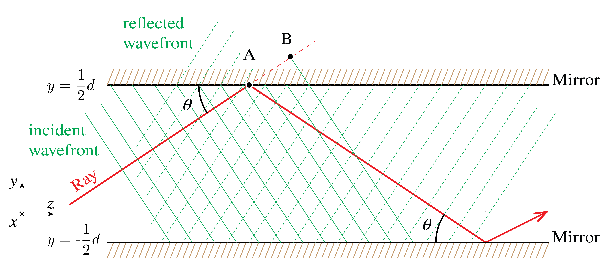
Fig. 131 Wavefront transmission through a mirror waveguide. The transmission of light can be described using EM-field modes that only allow specific angles \(\theta\).#
To introduce the concept of fiber modes, we consider the planar mirror waveguide in Fig. 131. This waveguide consists of two (perfect) planar mirrors placed in the \((x,z)\)-plane in vacuum at positions \(y=\pm d/2\) (hence their separation is \(d\)). Monochromatic light rays with wavelength \(\lambda_0\) enter the waveguide under an angle \(\bar{\theta}\). They propagate through the waveguide while constantly bouncing back and forth between the mirrors. This waveguide is a simplification from the optical fibers we are considering in this chapter, but it is more straightforward to study. Modes in optical fibers follow from the same considerations and the necessary generalizations are touched upon toward the end of this section.
In order for a light ray to represent a mode, we impose a self-consistency condition that guarantees the invariance of distribution and polarization under propagation. In practice, this boils down to the wave repeating itself after every second bounce. With reference to Fig. 131, the self-consistency condition thus imposes that the phase acquired by the reflected wave traveling from A to C equals the phase acquired by the ‘‘non-reflected’’ wave traveling from A to the virtual point B up to an integer multiple of \(2\pi\). Of course, as the mirrors are considered perfect, both reflections add a phase shift of \(\pi\), such that
or
Using elementary geometry and the relation \(\cos(2\bar{\theta})=1-2\sin^2(\bar{\theta})\), it can be shown that \(|AC|-|AB|=2d\sin(\bar{\theta})\) and thus the self-consistency condition becomes
We thus find that only certain bouncing angles \(\bar{\theta}_m\) are allowed by the self-consistency condition and these are referred to as the \(m\) modes of propagation. From Eq. (473) we can draw the important conclusion that the number of modes in the waveguide is limited, because \(\max(\sin(\bar{\theta}_m))=1\). This implies that:
the maximum number of modes \(M\) possibly propagating through the waveguide equals
where the floor-function rounds the fraction \(2d/\lambda\) down to the nearest integer value;
for \(M=1\), the waveguide is a single mode waveguide, and if \(M>1\) the waveguide is said to be multimode;
if \(M=0\), no light can propagate. This defines \(\lambda_{\text{c}}=2d\), the cut-off wavelength, as the largest wavelength for propagation, i.e., if \(\lambda_0>\lambda_{\text{c}}\) no propagation occurs.
To obtain the field distributions of the EM-fields propagating through the waveguide, consider a wave propagating along the waveguide in \(z\)-direction, which is polarized in \(x\)-direction. It should be realized that such a wave actually consists of two superposed waves, one in the upward and one in the downward direction due to internal reflection of the wave fronts, see Fig. 132. In case the up-propagating wave is described by
the down-propagating wave is described by
Here, the wavenumbers \(k_{y,m}=2\pi\sin(\theta_m)/\lambda_0\) and \(k_{z,m}=2\pi\cos(\theta_m)/\lambda_0\). The phase shift in the down-propagating wave of \((m-1)\pi\) follows from the condition that after superposing the two fields, their magnitude at the mirrors (at \(y=\pm d/2\)) should vanish[2]. Therefore, the total field is of the form
in which \(E_0\) is the field’s amplitude and the mode distributions
The first few of these distributions are plotted in Fig. 132, from which it is observed that \(m\) corresponds to the amount of maxima in the distribution. The pre-factors \(\sqrt{2/d}\) in Eq. (475) are chosen such that the functions are orthonormal, meaning
In practice this implies that all possible light pulses transmitting through the waveguide can be written as a linear combination, or superposition, of modes. As stressed before, this is analogous to tones played by a musical instrument.
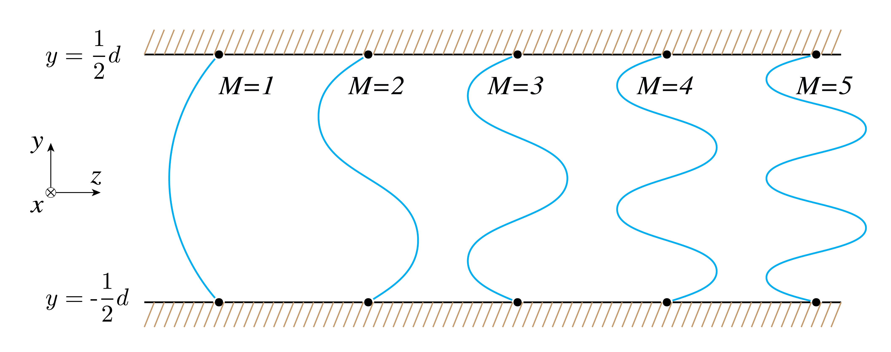
Fig. 132 The first five modes (\(m=1\) through \(5\)) in the mirror waveguide.#
This concludes our discussion on fiber modes in the planar-mirror waveguide. To generalize this discussion to optical step-index fibers, two considerations are added. First, in optical fibers the EM-fields are not bounded by the core. Rather, the fields also enter the cladding partly in which the field amplitude is rapidly diminishing, or evanescent. Second, apart from the ‘‘linear’’ self-consistency discussed for the planar-mirror waveguide, fibers additionally have a ‘‘circumferential’’ self-consistency condition, as depicted in Fig. 133(a). This implies fiber modes are labeled by two indices, generally \(m\) (linear self-consistency) and \(l\) (circumferential self-consistency). A selection of fiber mode field distributions is depicted in Fig. 133(b). A distinction is made between single mode fibers (SMF) and multimode fibers (MMF). In the former only the \((m,l)=(1,0)\) mode can propagate, whereas the MMF supports more or even many modes.
{kind=link}
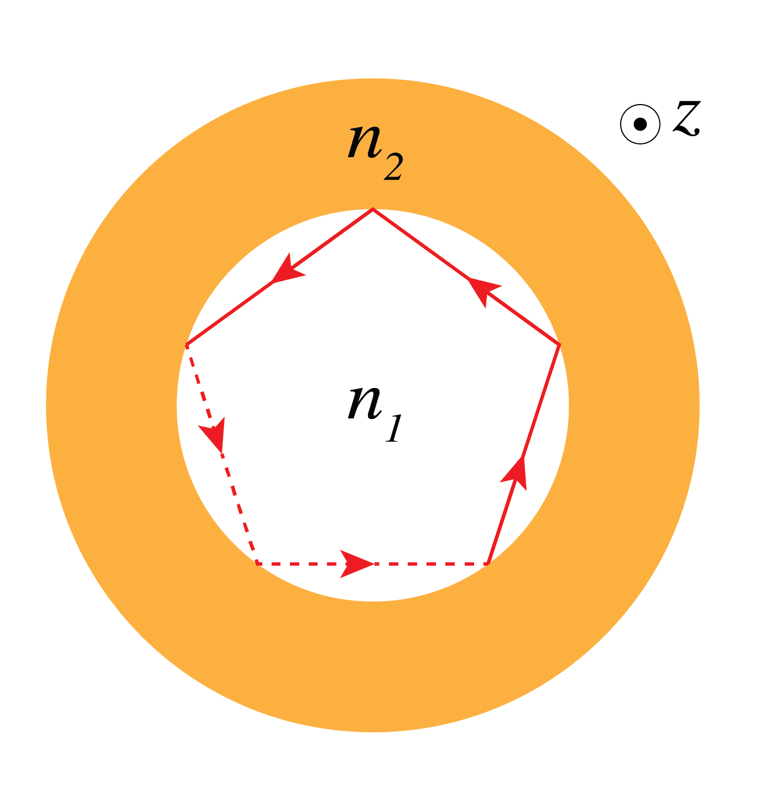
{kind=link}
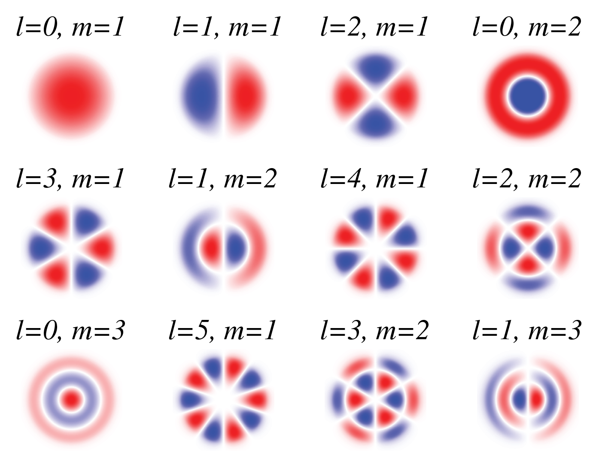
Fig. 133 Modes in step-index fibers. (a) Apart from the linear self-consistency condition, modes in optical fibers also follow from circumferential self-consistency. This imposes that rays representing a mode should bounce around the core an integer number of steps during one up-down cycle of the rays. (b) Collection of step-index fiber EM-field modes. \(m\) represents the linear self-consistency condition and \(l\) the circumferential self-consistency condition.#
Fiber parameters#
Optical fibers can be characterized by a number of parameters. Here we list a selection of these numbers.
\(\Delta\)-parameter – The \(\Delta\)-parameter is directly related to the relative difference in core and cladding refractive index, see Fig. 130. It is defined as
\[\begin{align*}\label{eqDelta} \Delta=\dfrac{n_1^2-n_2^2}{2n_1^2}\approx \dfrac{n_1-n_2}{n_1}. \end{align*}\]
The approximation, which entails the relative difference of \(n_1\) and \(n_2\) holds for the weakly guiding fibers under consideration in this chapter. It follows from setting \(n_2=n_1-\Delta n\) and neglecting terms of order \(\Delta n^2\). For \(n_1=1.448\) and \(n_2=1.444\), \(\Delta=5.5\times 10^{-3}\).
Numerical aperture (NA) – The NA relates the fiber and the (external) critical angle under which it accepts (or emits) light, \(\bar{\theta}_{\text{e,c}}\). That is, the maximum value of \(\bar{\theta}_{\text{e}}\) in Fig. 130 such that TIR occurs. The NA for fibers is defined as
and equals \(0.11\) if \(n_1=1.448\) and \(n_2=1.444\). With reference to Fig. 130, this follows from
in which we use that \(\bar{\theta}_{\text{i,c}}=\pi/2-\arcsin(n_2/n_1)=\arccos(n_2/n_1))\), such that \(\cos(\bar{\theta}_{\text{i,c}})=n_2/n_1\). In this derivation it is assumed that the fiber’s environment has refractive index \(n_{\text{e}}=1\).
\(V\)-number – The \(V\)-number, or fiber parameter, governs the number of modes supported in the fiber. It is defined as
(477)#\[\begin{align*} V=\dfrac{\pi d}{\lambda_0}\mathrm{NA}. \end{align*}\]For step-index fibers, the number of modes is approximately equal to \(M=V^2/2\) if \(V\gg 1\). If \(V<2.405\), only a single mode is supported and the fiber is referred to as an SMF. If \(V>2.405\), the fiber is multimode.
cut-off wavelength – Similar to the planar waveguide discussed in Fiber modes, optical fibers have a cut-off wavelength, above which light can no longer propagate. This wavelength can be calculated as
Fiber dispersion#
Light propagating though fibers often suffers from dispersion, or pulse broadening. The cause for dispersion is that transmitting waves (e.g. at different wavelength) do not travel at the same velocity, which may cause information loss. In e.g. telecommunication, information is typically sent using short pulses of light, which may start to overlap in time upon broadening, see Fig. 135(a). Once two pulses overlap, they cannot be separated anymore and the information contained in the original pulses is lost. Here three main causes for dispersion are discussed, modal dispersion, material dispersion and waveguide dispersion.
Modal dispersion is relevant for MMFs, in which several modes of light are present simultaneously. As discussed in Fiber modes, light rays bounce through a fiber or any other waveguide. To introduce modal dispersion we refer back to the planar mirror waveguide depicted in Fig. 131. Since the rays of higher-order modes are at larger angles \(\bar{\theta}_m\) (see Eq. (473)) than lower-order modes, the higher-order modes have a longer path length. This means that the effective propagation velocity \(v_z\), the velocity at which the wave travels in \(z\)-direction, decreases with increasing mode number. For the planar mirror waveguide in vacuum the propagation velocity for the \(m^{\text{th}}\) mode is
Here we used that \(\cos^2(\theta)+\sin^2(\theta)=1\) along with Eq. (473).
Now consider an infinitely short pulse that consists of light in the \(i^{\text{th}}\) and the \(j^{\text{th}}\) mode only, with \(i<j\). For the sake of the argument, we still presume that the light is monochromatic, although in reality this is not the case (see below). Then these modes travel in \(z\)-direction with a velocity difference
Due to the velocity difference, the difference in arrival time of the two modes at the end of the waveguide of length \(L\) is
which is depicted in Fig. 134 for several combinations of \(i\) and \(j\). Thus, the infinitely short pulse that we started with has broadened to a ‘‘width’’ \(\Delta\tau\) at the end of the waveguide. This limits the signal pulse repetition rate to \(1/\Delta\tau\): if the rate is increased beyond this value, consecutive pulses start to overlap and information is lost.
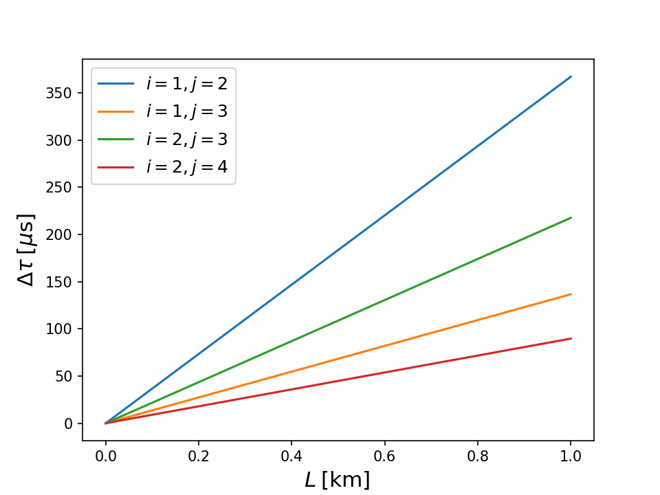
Fig. 134 Modal dispersion in the mirror waveguide, see Eq. (478)#
In reality, light pulses in multimode waveguides contain many modes and are not infinitely short. However, the same ideas hold: due to modal dispersion the pulse broadens, thereby limiting the rate of information transfer. This is also true for optical fibers. In this case one can calculate for the time delay between the fastest mode (the \((m,l)=(1,0)\) mode) and the slowest mode (mode at the critical angle) that
Hence, for a step index fiber with \(n_1=1.448\), \(n_2=1.444\) and a V-number of \(5\), \(\Delta\tau/L=5\text{ns/km}\).
Up to this point we have implicitly assumed that the light transmitted through optical fibers is monochromatic. This is not the case: in telecommunication information is sent through fibers by means of short pulses of light. However, the shorter the pulse, the broader its wavelength spectrum, as schematically depicted in Fig. 135(b). Apart from this effect, any light source has an intrinsic width of their emitted wavelength spectrum.
Now we consider a signal pulse propagating through a medium. The pulse has a central wavelength \(\lambda_0\) and a spectral width \(\Delta\lambda\). If the index of refraction is wavelength-dependent, \(n=n(\lambda)\), such as in SiO\(_2\) , the spectral width of the signal propagating through a fiber results in dispersion. This is due to the fact that the pulse’s (group) propagation velocity is imposed by the group refractive index \(n_{\text{g}}\) as \(v_{\text{g}}=c/n_{\text{g}}\), which in turn depends on \(n(\lambda)\) as
Hence all wavelength components present in the pulse travel at slightly different velocity and dispersion is the result. From Eq. (479) we see, however, that the effect only occurs whenever \(\mathrm{d}^2n/\mathrm{d}\lambda^2\neq 0\) (NB: if \(n\) is constant or of the form \(n=a\lambda+b\), Eq. (479) still yields a constant group refractive index). This is the case for SiO\(_2\) as can be observed in Fig. 135©.
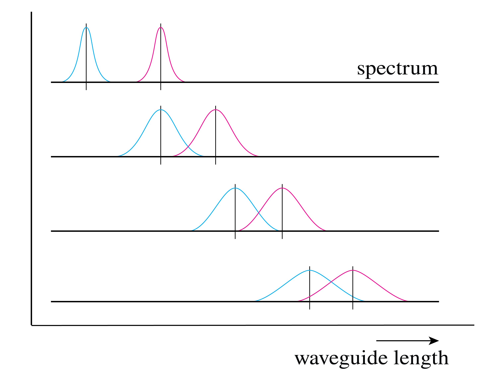
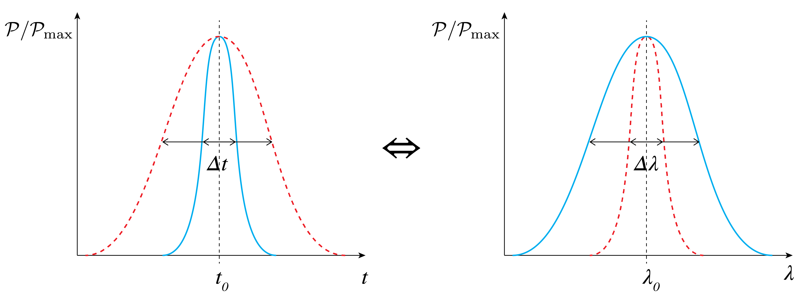
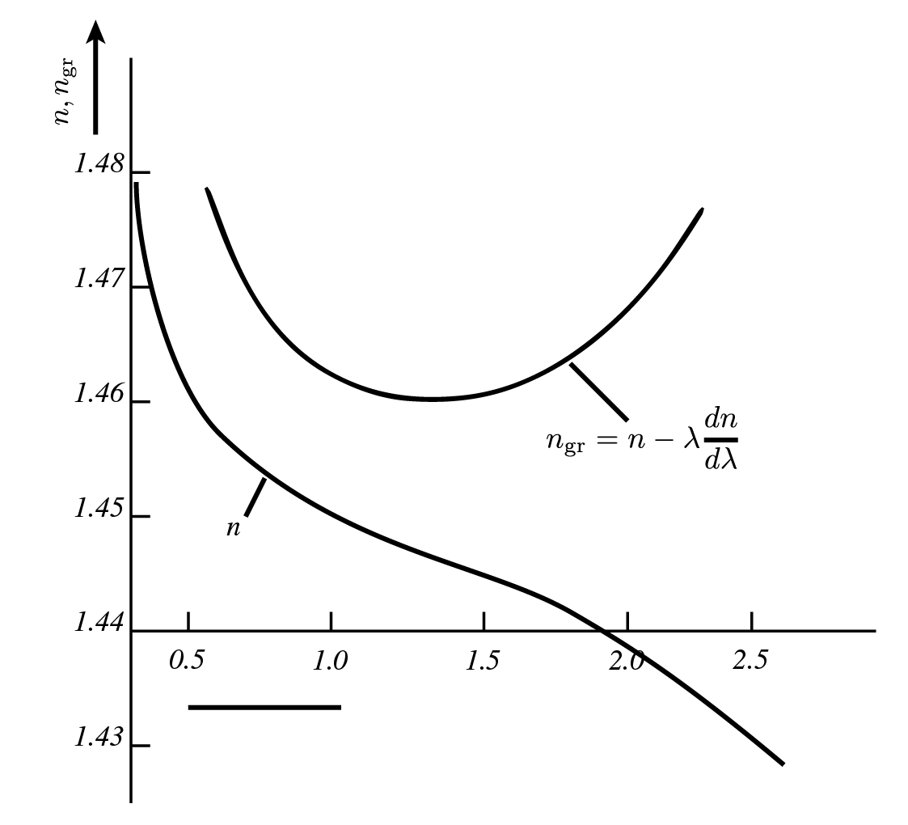
Fig. 135 Dispersion in optical fibers. (a) Dispersion, or pulse broadening, causes light pulses to broaden while propagating. Information is lost when pulses start overlapping in time after a length of fiber. The effect is due to a difference in propagation velocity of the wavelengths and/or modes present in the pulse. (b) The spectral width of the pulse leads to material and waveguide dispersion. Shorter pulses have a broader wavelength spectrum and vice versa. © In SiO\(_2\), the group index of refraction, that determines the velocity of a light pulse propagating through a fiber, is wavelength dependent. This causes material dispersion.#
Due to material dispersion, the change in pulse width after fiber length \(L\) is given by
However, in practice often the dispersion is reported as
in units of \(\text{ps}/(\text{km} \cdot \text{nm})\). That is, the increase in pulse width (in \(\text{ps}\)) per \(\text{km}\) of fiber with the source’s spectral width in \(\text{nm}\). Typical values of this parameter are \(10\) to \(20\text{ps}/(\text{km}\cdot \text{nm})\).
A second effect of the spectral width of light pulses is that they disperse even if light propagates in a single mode. As observed from Eq. (473), the angle \(\bar{\theta}_m\) not only depends on the mode \(m\), but also on the wavelength of the light. Therefore, all wavelength components of the light will propagate at a slightly different \(\bar{\theta}_m\). This will cause dispersion in the same fashion as discussed before for modal dispersion. Typically, waveguide dispersion is only relevant for SMFs.
For step-index optical fibers, waveguide dispersion can be calculated as
It should be noted that \(D^{\text{wav}}<0\) as \(n_1>n_2\) for TIR, see Total internal reflection. Typical values of this parameter are \(-5\) to \(-10\text{ps}/(\text{km}\cdot \text{nm})\).
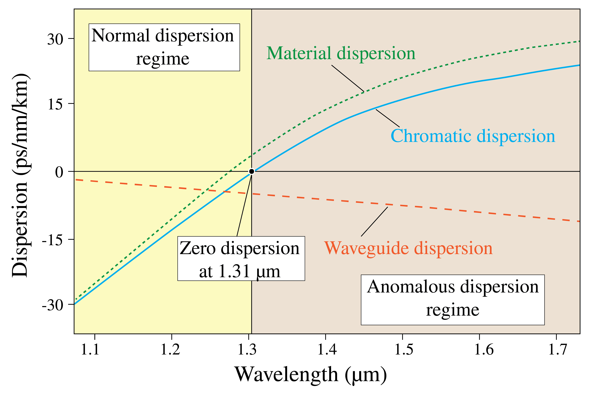
Fig. 136 Material and waveguide dispersion for a SiO\(_2\) SMF. Taking the sum of both effects allows to create dispersionless fibers for a wavelength of \(1310\text{nm}\)#
Dispersion effects may cancel each other or engineered, such that dispersionless fibers can be constructed. E.g., for SMFs, in which only material and waveguide dispersion play a role, the total dispersion is given as \(D=D^{\text{mat}}+D^{\text{wav}}\). Notice from Eqs. (480) and (481) that \(D^{\text{mat}}\) and \(D^{\text{wav}}\) have an opposite sign and if we plot both expressions using SiO\(_2\) as fiber material, see Fig. 136, it is observed that these dispersion effects cancel at \(\lambda_0=1310\text{nm}\). This makes \(1310\text{nm}\) a popular wavelength for building optical fiber networks.
Dispersionless fibers can also be engineered, e.g. by using a technique similar to the fiber Bragg grating, to be discussed in Applications of fiber optics and future directions. However, it should be noted that these cancelation effects, whether intrinsic or engineered, only yield dispersionless fibers at a single wavelength. Also, as we will see below, dispersionless fibers come at a cost of increased optical transmission loss.
Fiber loss mechanisms#
So far, we have implicitly neglected fiber losses. However, in reality, losses do occur while light propagates through a fiber. This causes the light to be attenuated following the exponential decay
with \(P(z)\) the light power at position \(z\) along the fiber and \(\alpha\) is the loss coefficient per unit length. Taking the \(\text{km}\) as unit for \(z\), this value can be obtained from the loss coefficient in dB/km as \(\alpha=-\ln(10^{-\alpha_{\text{dB}}/10})\). For SiO\(_2\) the loss coefficient is plotted in Fig. 137. In this section we discuss the main loss mechanisms in optical fibers: Rayleigh scattering, absorption, bending and coupling losses.
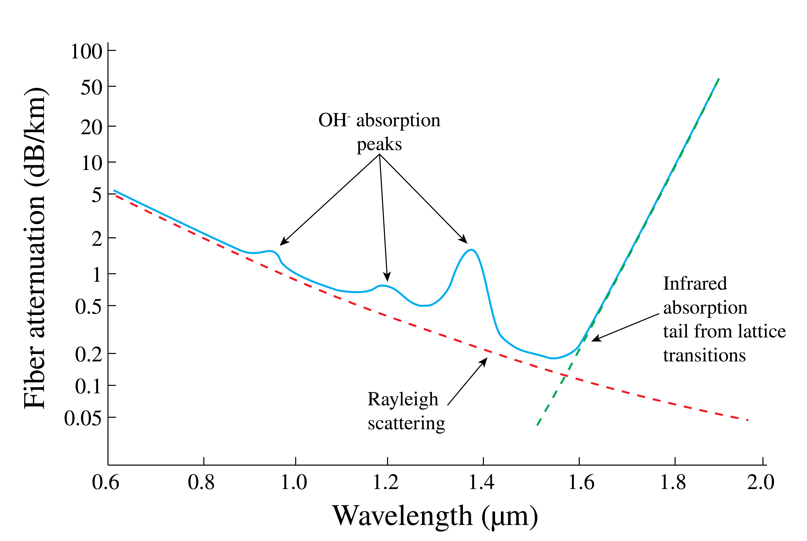
Fig. 137 Fiber loss as function of wavelength. Material losses occur due to scattering and absorption processes.#
Rayleigh scattering occurs as a result of SiO\(_2\) crystal imperfections in the fiber. These occur if the crystal lacks Si- or O-atoms in its lattice at some positions, or when an additional atom is ‘’squeezed in’’. Due to these lattice distortions, some of the light is scattered in a random direction. The average loss factor from Rayleigh scattering is given by
where \(\alpha_0^{\text{R}}\) is the loss factor experimentally measured at a wavelength \(\lambda_0^{\text{R}}\). For SiO\(_2\), \(\alpha_0^{\text{R}}\) is approximately \(0.15\text{dB/km}\) at \(\lambda_0^{\text{R}}=1550\text{nm}\). This makes Rayleigh scattering the dominant loss mechanism in SiO\(_2\) for lower wavelengths.
At larger wavelengths infrared absorption becomes the dominant loss mechanism in SiO\(_2\) fibers. Infrared light may excite vibrational states of SiO\(_2\), which excitation energy is subsequently dissipated as heat in the fiber. The loss coefficient for infrared absorption is given by
For SiO\(_2\) fibers \(\alpha_0^{\text{IR}}\) is in the order of \(10^{12}\) dB/km and \(\lambda_0^{\text{IR}}\) equals approximately \(50\mu \text{m}\).
Additionally, the three attenuation peaks at approximately \(975\), \(1225\) and \(1400\text{nm}\) in Fig. 137 are due to absorption. These absorption bands are caused by the presence of hydroxyl (OH\(^{-}\))-groups stemming from water vapour dissolved in the SiO\(_2\) during fabrication. Apart from these bands, other bands may be present due to other contaminants such as Copper (Cu), Iron (Fe) and Nickel (Ni) (not depicted in Fig. 137).
As can be observed in Fig. 137, fiber losses in SiO\(_2\)-fibers are minimized for a wavelength of \(1550\text{nm}\), which is therefore the wavelength of choice in applications that require minimization of loss, such as telecom networks.
Beside the intrinsic losses of Rayleigh scattering and absorption, losses also occur as a result of extrinsic factors, such as (excessive) bending and coupling.
In case an optical fiber bends, losses may occur if the bending radius is too small. This can be understood from considering the light rays in the fiber. As these travel on straight paths, a bend changes the angle under which the rays hit the core-cladding boundary, see Fig. 138. As such, the ray may reach this boundary under an angle \(\theta_{\text{i}}\) below the internal critical angle. As a result some of the light refracts into the cladding and is lost.
Bending may occur on macro-scale (Fig. 138(a)) while intentionally making a fiber bend during installation, or on micro-scale (Fig. 138(b)). The latter may as a result of improper fiber handling, e.g. when the fiber is strained excessively.
To prevent macro-bending losses, the critical radius of fibers should be noted. This parameter is listed in the fiber datasheet. Making bends tighter than this critical radius results in macro-bending losses. \begin{figure}[htbp]
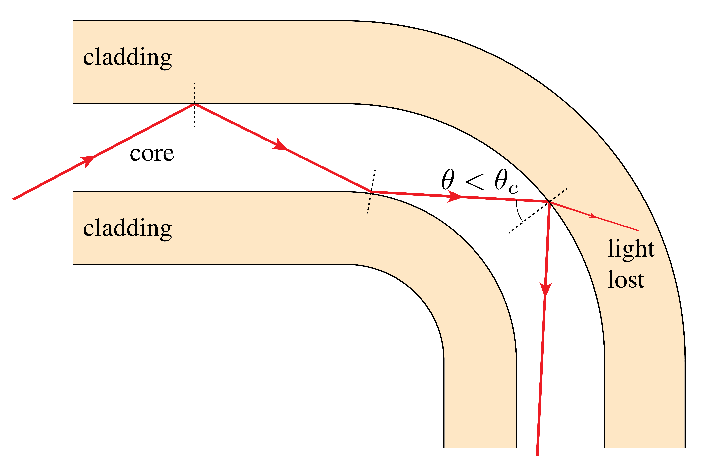
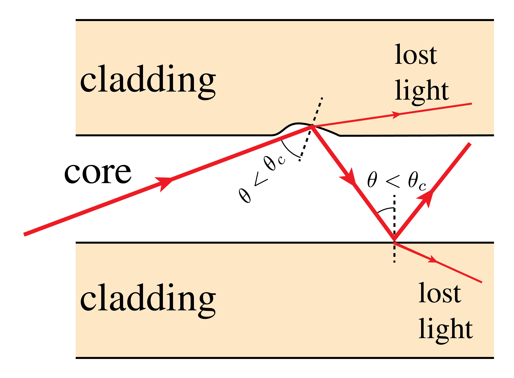
Fig. 138 Bending on (a) macro-scale and (b) micro-scale (exaggerated) generate fiber loss if the internal critical angle is locally exceeded.#
Apart from internal fiber losses, losses may also occur while coupling fibers, see Fig. 139. This happens when fiber cores are not aligned properly (they are shifted with respect to each other, placed under an angle or there is a gap in between the fibers), when a higher-NA fiber is coupled to a fiber with lower NA, or when the core size of the two fibers is different. In case of a mismatch in NA, the lower-NA fiber will support less modes (see Eq. (477)) and the higher order modes will be lost. Apart from these issues with connecting fibers, internal reflections between different fiber cores cause losses. These reflections occur whenever the index of refraction changes. For each type of coupling loss, the loss factor can be easily a few dB, as you can estimate yourself in one of the problems at the end of this chapter. Therefore care must be taken to couple fibers properly.

Fig. 139 Collection of situations in which coupling loss occurs. \(\delta\) is the misalignment parameter (different in every subfigure).#
Fiber types#
Apart from the step index fibers that we have considered up to this point, other types of optical fibers are available. The only condition for constructing an optical fiber is that light remains confined to the fiber core. In step index fibers this occurs due to the discontinuous decrease of the refractive index at the core-cladding boundary giving rise to TIR. In this section we shortly introduce different types of optical fibers and color coding.
In graded index fibers, the refractive index changes in a continuous fashion over the fiber diameter. At a cost of a more complex fabrication process, the advantage of GRIN fibers over step index fibers is that modal dispersion is less severe.
Another fiber type is the so-called holey fiber, see Fig. 140. Instead of changing the refractive index using dopants, the cladding of holey fibers contains a carefully designed array of holes containing air, which change the refractive index of the ‘‘cladding’’ (part of the fiber with holes) with respect to the ‘‘core’’ (part of the fiber without holes). These holes run over the whole length of the fiber. This implies holey fibers can be constructed from a single material.
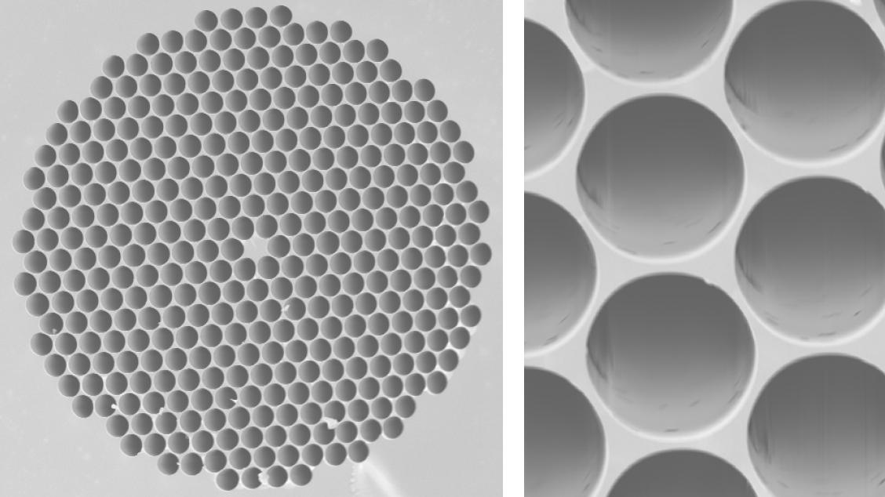
Fig. 140 SEM micrographs of US Naval Research Laboratory-produced photonic-crystal fiber. (left) The diameter of the solid core at the center of the fiber is \(\sim 5\mu \text{m}\), while (right) the diameter of the holes is \(4\sim \mu\text{m}\). (From Wikimedia Commons / CC BY-SA))#
Related to the holey fiber, the photonic bandgap fiber also contain air holes, see Fig. 140. However, in PBFs these holes are arranged in a fashion that a bandgap is created in the cladding. Such a bandgap does not allow light of certain wavelength(s) to transmit through the cladding, thus confining light of this wavelength to the core. This is fundamentally different from fibers based on changes in refractive index. Where the latter only has a cut-off wavelength above which no propagation occurs, PBFs only confine light of a narrow wavelength band with a typical width of a few tens of nanometres.
Apart from wavelength, light also carries the property of polarization. In the fiber types discussed so far, no measures are taken to preserve the polarization of the light transmitting through the fiber. Therefore, crosstalk may occur between light transmitted in different polarizations as a result of, e.g., bends in the fiber. This is not a problem if the fibers are used in applications in which only the intensity of the transmitted light is considered, e.g., in telecommunication, in which information is stored in binary pulses that are either on (logical \(1\)) or off (logical \(0\)). However, in other applications such as quantum key distribution, information is stored in the polarization of the light: horizontal or vertical.
In such applications, the light’s polarization needs to be preserved throughout the fiber’s length for which polarization maintaining fibers have been developed. In such fibers crosstalk between the different polarization modes is prevented and light exiting the fiber has the same polarization as that entering the fiber. PMFs are rarely used for long-distance communication, since optical losses are generally higher than in other fiber types. PMFs are more expensive as well.
The final fiber type to be discussed is the plastic fiber. Plastic fibers are generally made with a PMMA (polymethyl methacrylate, \(n_1=1.49\)) core, whereas the cladding is fluorinated. This lowers the refractive index to approximately \(n_2=1.40\), implying plastic fibers have a large NA. Apart from such step-index plastic fibers, GRIN plastic fibers are available. Plastic fibers are low-cost and more resilient to bending and handling than SiO\(_2\) fibers. This is due to plastic fibers having a core diameter of typically \(1\text{mm}\), instead of the fragile few-micrometer core diameter of SiO\(_2\) fibers. Using plastic instead of SiO\(_2\) comes, however, at a cost of higher losses in the order of \(1\text{dB/m}\). Due to these properties, plastic fibers can be found in, e.g., home, company and car data networks.
To distinguish fibers from each other, the fiber jacket is colored according to standard color codes. These codes can be found in, e.g., reference guide of the Fiber Optic Association (FOA). To give a few examples: MMF jackets are colored orange (most often), bright green or aqua, while SMF jackets are yellow (always) and PMF jackets are blue (always). In fiber bundles containing multiple fibers (so-called Multiple Position Optical (MPO) fibers), the fibers are color coded according to number: the first fiber in the bundle is blue, the second orange, the third green, etc… Using such a standard color coding makes fibers discernible and recognizable, which prevents errors during installation.
Fiber connections#
In order to couple light into and out of optical devices and components, fiber connections need to be made. This also holds in case one wants to couple two fibers together. These connections are made using fiber connectors for which many designs have been put forward over the years. Ideally, the connection is loss-less. However, in practice all connections induce some (sub-dB) loss. This section discusses the most common manners in which fibers are connected currently, by splicing or using a fiber connector. The most common fiber connectors are depicted in Fig. 141.
In fiber splicing, two fibers are permanently joined together by fusion or mechanical means. In fusion splicing the fibers are fused together by aligning the cores and claddings of both fibers and heating the joint shortly. Fusion splicing creates the strongest joints with the smallest loss. In mechanical splicing a mechanical fixture is used to align and fixate the fibers. Although such splices are less strong and increase loss with respect to fusion splices, the equipment for making mechanical splices is less expensive. Splices are used for places that do not allow for future inspection, such as the optical connections between Europe and North-America running over the ocean floor. Apart from this, splicing can be used as a means to repair broken optical fibers.
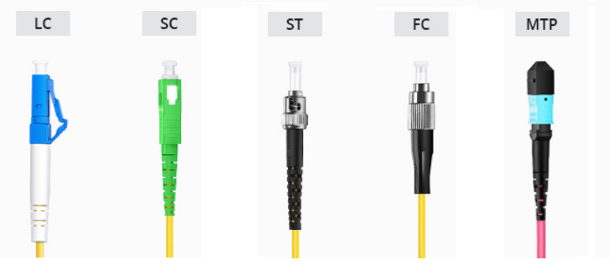
Fig. 141 Gallery of optical fiber connectors. Adapted from FS community.#
There is many types of connector. We report on the main ones here.
Lucent connector (LC) – The lucent connector, also referred to as the little connector, is the connector type most used today. In the tip of the connector, the fiber is protected by a so-called ferule (Fig. 142), which for LCs is only \(1.25\text{mm}\) in diameter. The connector snaps into place and can be detached using a push-pull motion. This makes installation an easy procedure. Due to its small footprint, it is ideal for high-density fiber applications such as in data centers.
Standard connector (SC) – The standard, or ‘‘square’’, connector was an early attempt to standardize fiber connectors. With a \(2.5\text{mm}\)-diameter ferule, it is larger than the previous LC connector, but still well-suited for use in data centers and passive networks due to its excellent performance, especially in the area of polarization maintaining applications. The SC connector is attached and detached in a similar way as the LC connector, making its installation easy.
Straight tip (ST) connector – The straight tip connector has a \(2.5\text{mm}\)-diameter spring-loaded ferule. This implies that the ferule is pushed onto the device it is connected to thereby improving the transmission. Typically used for multimode fibers, it has a bayonet mount, which secures itself after turning it by a half twist.
Ferrule core (FC) connector – The ferule core connector it typically used for SMF and high precision applications, such as optical time domain reflectometry (OTDR). Its springloaded ferule is \(2.5\text{mm}\) in diameter. It has an alignment key ensuring the connector is always inserted to the device in the same orientation. Secondly, the connector is secured using a threaded collet. Although this connector is thus more complex in installation, as well as in manufacturing, the repeatable accuracy with which it can be installed gives the precision in afore mentioned applications.
Multi-position optical (MPO) connector – The multi-position optical connector, also known under its trade name Multi-fiber Termination Push-on (MTP) connector, is designed for connecting MPO fibers containing \(12\) or \(24\) optical fibers in one bundle. Such fibers are often used for high-bandwidth optical parallel connections in, e.g., data centers and servers.
Physical contact (PC) – All of the above connectors are available in three forms of physical contact of the ferule, see Fig. 142. PC indicates that the connectors are designed such that fibers are brought into physical contact upon coupling a connector to a photonic device or another connector. As a result of polishing, the air gap in a fiber connection is diminished, thus improving the transmission of light through the connection (and reducing the back-reflection). Ordinary PC connectors have a back reflection below \(-40\text{dB}\). As variations, ultra-physical contact (UPC, connector colored blue) and angled physical contact (APC, colored green) connectors are available. UPC connectors have a finer polish which decreases back reflection to below \(-50\text{dB}\). APC are polished under an angle of \(8^{\circ}\), which changes the direction of the reflected light. As such, back-reflection of less than \(-60\text{dB}\) is achieved. Improving physical contact comes with increased cost: PC connectors are cheapest, and UPC connectors most expensive of the three. Importantly, it should be noted that PC and UPC connectors are compatible, whereas APC connectors are incompatible with both. Connecting PC and APC fibers leads to a large air gap between the fibers, see Fig. 139-©, and thus to large losses.
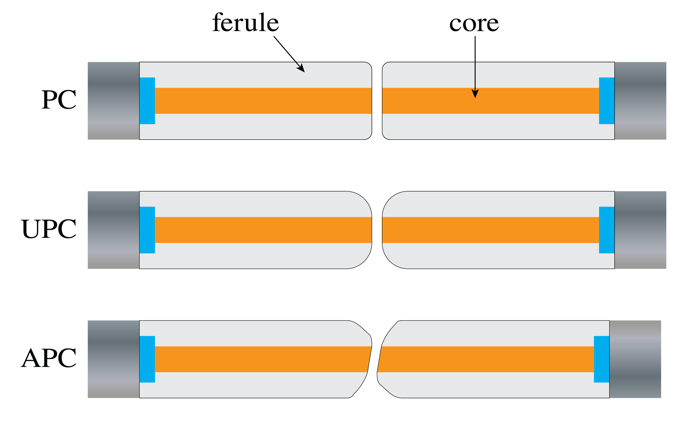
Fig. 142 Physical contact between fiber connectors. (top) (ordinary) physical contact, (middle) ultra-physical contact and (bottom) angled physical contact.#
Fiber components#
Now that a solid background on the topic of optical fibers has been established, we move on toward optical fiber setups. These setups contain fibers as a means to transmit light, and contain fiber components to manipulate light. Examples of light manipulation are splitting or combining light, influencing its polarization or changing its intensity by attenuation or amplification. This section describes components commonly found in fiber setups.
In order to couple light into or out of fiber setups from free space, collimators are used as a gateway. Collimators contain a positive lens and are attached to a fiber with its end placed in one of its focal points. As such, a collimated beam of light, such as laser light, can be coupled into the fiber. The opposite process can be used to couple light out of the fiber setup into free space and yields a collimated beam. This is illustrated in Fig. 143. In case the collimator is used to couple light out of a fiber, the beam width (half the beam diameter) of the resulting collimated beam can be reasonably approximated as
where \(f_{\text{coll}}\) is the focal length of the collimating lens. \(w_{\text{coll}}\) is in the order of \(1\text{mm}\) for a typical fiber NA of \(0.1\) and an \(f_{\text{coll}}=1\text{cm}\). On the other hand, it should be realized that upon coupling light into a fiber from a collimated beam, the (incoming) beam width should be smaller the value resulting from Eq. (482). If the beam is broader, some light will not couple into the fiber and is therefore lost. This results from \(\bar{\theta}_{\text{e,c}}\) (see Fig. 130) being exceeded by part of the light beam.
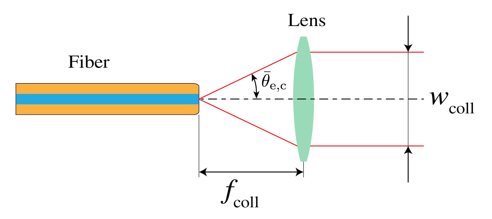
Fig. 143 A fiber collimater can be used to couple collimated light out of and into an optical fiber#
Light propagating in fibers can be split in (un)equal parts and light from multiple fibers can be combined into one fiber. Devices for these goals are called splitters and combiners. These belong to the general class of couplers in which light from \(N_{\text{in}}\) input channels is redistributed over \(N_{\text{out}}\) output channels. Couplers are based on the phenomenon of evanescent fields. Although light rays are confined to fiber cores, their associated EM-fields extend in the fiber cladding, the evanescent field, as briefly mentioned in Fiber modes and illustrated in Fig. 144. If two fiber cores are brought in close proximity, energy from the evanescent field from light transmitting through the one fiber core enters the other fiber’s core and continues its path there. The amount of light coupling depends only on distance between the two fiber cores and the length over which they are in proximity, such that variable coupling factors can be obtained. Splitters and combiners are especially important in telecommunication in the process of wavelength-division multiplexing (WDM). This enables bidirectional communication over a single fiber, which capacity is therefore multiplied by a large factor.
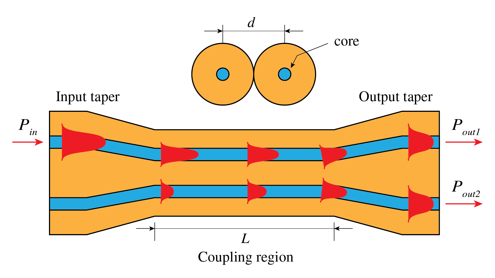
Fig. 144 EM-fields in optical fibers are not confined to the core but extend in the cladding. By bringing two fiber cores in close proximity, light can be coupled from one fiber into another.#
In isolators, light is able to propagate in one direction, but not in the other. As such optical devices can be isolated from each other, with the result that light reflected from one device cannot back-propagate to another device. This is important to protect e.g. a laser from incoming light back-reflected from another device. The working principle of isolators is based on light polarization and birefringency. This causes forward-propagating light to be coupled out of the device, whereas the back-propagating light path is diverted and the light is absorbed.
A similar mechanism lies at the basis of circulators. These components have three, four or six ports and light coupled into one port is only transmitted to one other port. Thus, in a three-port circulator, port \(1\) is coupled to port \(2\), \(2\) to \(3\) and \(3\) to \(1\). Using circulators, a single fiber can be used to transmit and receive a (reflected) signal. Both are then separated using this component, which is relevant for Fiber Bragg gratings (discussed in Applications of fiber optics and future directions) and Michelson-Morley-type interferometers.
In some applications it is necessary to attenuate or amplify the light power transmitting through fibers. This would be the case if power levels are too high or low for a detector or for another component further downstream in the fiber network. Also, attenuators and amplifiers may be used to stress-test a network under (unwanted) power loss or gain, and amplifiers in particular can be used to compensate for fiber losses in long-distance fiber connections.
Optical attenuation can be achieved by the methods that have so far been considered as a negative influence to light transmission: scattering, absorption and air gaps, see Fiber loss mechanisms. Attenuators can either be fixed or variable in their attenuation. The latter can be tuned continuously or step-wise by hand or electronically to the desired attenuation level. This allows for testing a network under variable attenuation level without making hardware changes. It should be noted that attenuators tend to have a high reflection. If these reflections are unwanted, attenuators can be applied in combination with isolators, such that the reflected light power does not back-propagate through the network.
For optical amplification, an intense pump signal is coupled into an amplifier, along with the signal-to-be-amplified. The pump can be provided by a laser, or by an electronic signal. Due to stimulated emission in the amplifier, a little of the energy of the pump signal is transferred to the signal-to-be-amplified, thus increasing (amplifying) its intensity. The most well-known fiber amplifier is the Erbium-doped fiber amplifier (EDFA) that works for signals with wavelengths between approximately \(1480\) and \(1600\text{nm}\), enabling transatlantic optical communication at telecom wavelengths (\(\lambda_0=1550\text{nm}\)). This fiber is doped with Er-atoms causing stimulated emission. However, fiber amplifiers based on other rare-earth dopants are also available, in particular neodymium, ytterbium, praseodymium, or thulium.
With polarization controllers the polarization of the light within an optical fiber can be influenced. These controllers consist of two or three ‘‘flaps’’ around which the fiber is wound, see Fig. 145. By adjusting the position of these flaps, either manually or electronically, the polarization state of the propagating light is controlled as a result of stresses applied to the fiber. As such each input polarization state can be changed to any output polarization state.
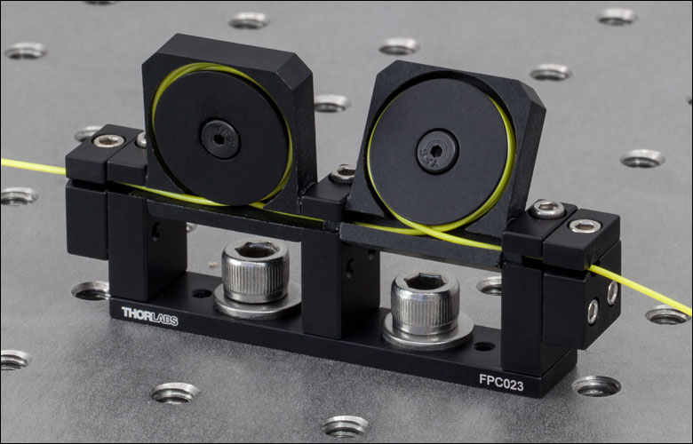
Fig. 145 A fiber polarization controller (courtesy of Thorlabs).#
Applications of fiber optics and future directions#
Nowadays, fiber optics is applied in many fields, both in industry as well as in academia. In this section we give a (non-exhaustive) overview of these fields as well as a hint in which direction the field of fiber optics is moving.
The main field in which fiber optics is applied is the field of telecommunication. Fiber optics allows for reliable communication over large distances with little loss of power, as we have seen throughout this chapter. Fiber optics is replacing conventional electronic (copper) technology, which is more lossy and therefore less durable, first in intercontinental communication lines and nowadays in local communication lines. Also data centers have transferred or are transferring from copper technology to fiber optics, which reduces their power consumption. Also, fiber optics can be used as a medium for quantum communication, that promises secure communication based on the laws of quantum physics.
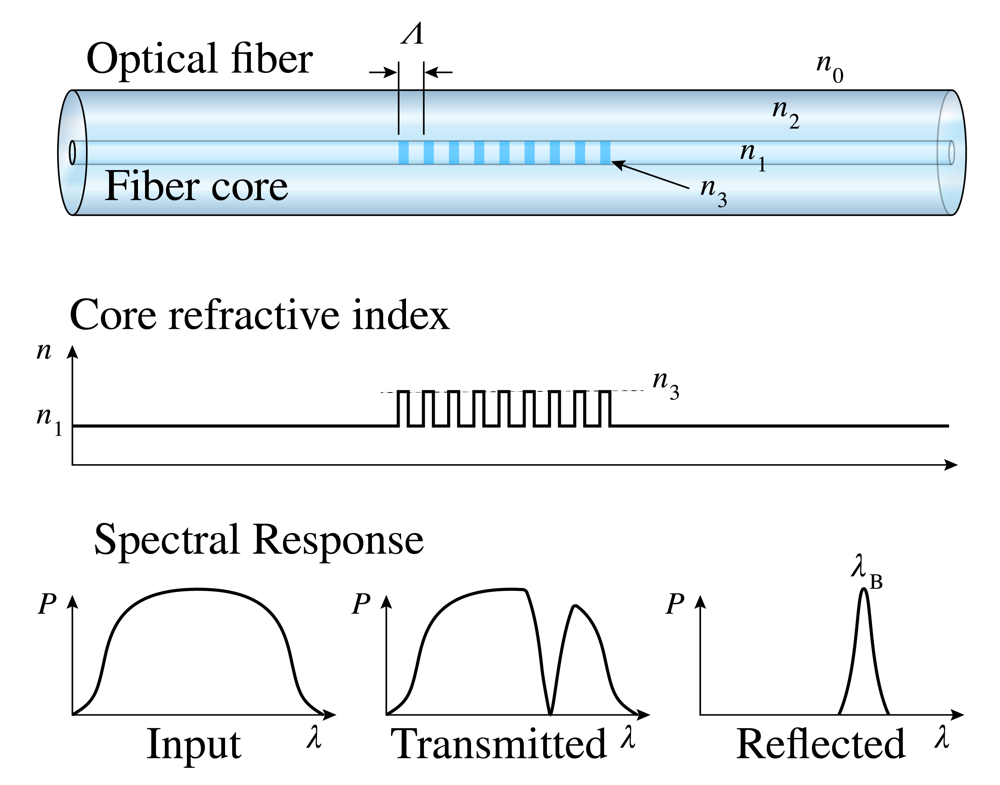
Fig. 146 A fiber Bragg grating reflects light of a specific wavelength only. This can be used to measure strain as straining the FBG results in a wavelength shift (adapted from Wikimedia Commons by Sakurambo / CC BY-SA)#
Apart from telecommunication, fiber optics can be applied in sensing systems. Fiber Bragg Gratings (FBGs) have been developed to measure strain (due to mechanical, temperature and pressure loading) in structures and materials. In FBGs, the fiber core consists of periodically interdigitated sections with refractive index \(n_1\) and \(n_3\), see Fig. 146, such that at each \(n_1\)-\(n_3\) boundary some light is reflected. This can be compared to a cascade of Fabry-Perot etalons and results in a sharp reflection peak at a specific wavelength that can be measured using a spectrometer. Upon attaching an FBG to a structure, it stretches or shortens due to strain and accordingly, the reflection peak shifts in wavelength. The same goal can be achieved using fiber optic implementations of interferometers.
Another application of fiber optics in sensing is given by evanescent wave sensing. Evanescent waves have been shortly introduced in view of couplers in Fiber components. However, upon tapering a single fiber, light from the environment can couple evanescently into the core and be detected. With this technique optical biosensors, water quality sensors and chemical sensors have been developed and the toolbox of evanescent sensors is still increasing.
Fiber lasers have been developed in which the gain medium is formed from a fiber doped with rare-earth elements, such as erbium. Since the gain medium is a fiber, it is flexible and therefore fiber lasers are easier in use as they allow for more straightforward delivery of power in a desired direction. This makes fiber lasers ideal for processes such as laser cutting and welding. Moreover, laser fibers can provide more power than conventional lasers such that industrial throughput times can be decreased. Such lasers are currently available for single, multiple, white-light and supercontinuum spectra making their field of application broad. The development of fiber lasers is still ongoing.
Other areas of current and future development of fiber optic applications are photonic integrated circuits that integrate electronic and optical devices. Multicore fibers are being developed to further increase information density and microstructured fibers such as holey fibers and PBFs are further investigated and developed in order to find designs with optimal properties in terms of loss and dispersion. The same holds for evanescent wave sensing and FBGs for which new applications are being explored continuously, e.g. in the sectors of biosensing and health monitoring (in particular point of care diagnostics).
With new applications of fiber optics arising in sectors such as agriculture, food, space, defense and energy, the field is steadily expanding. It holds a promise for developments making processes in those sectors better measurable, more cost effective and more energy efficient. This makes the field very interesting to follow in the upcoming years.
External sources in recommended order
General optics and theory of optical fibers:
Pedrotti, Pedrotti and Pedrotti, Introduction to optics, Cambridge University Press
Hecht, Optics, Pearson
Saleh and Teich, Fundamentals of Photonics (\(2\) parts), Wiley
Kasap, Optoelectronics and photonics, Pearson
Optical fibers in practice:
FOA: FOA reference guide to fiber optics https://www.thefoa.org/.
(Future) applications of fiber optics:
Photonics21: Strategic research and innovation agenda;
PhotonicsNL: Photonics roadmap \(2023\).